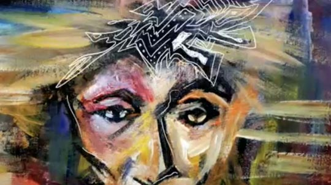

Requires Quicktime. 1 min 46 sec playing time.Barksdale was born in Nashville, Tennessee, into a family of artists. He was exposed to color and form at an early age by his grandmother, a quilt artist, and his mother who was gifted with an intuitive feeling for design and a fastidiousness for detail which she expressed in all aspects of her daily life. This rich beginning is the root of Barksdale's creative expression.
Barksdale earned his Bachelor of Fine Arts Degree at the prestigious Atlanta College of Art in 1994. During this period he was heavily influenced by the abstract expressionists and admired such mainstream artists as Jasper Johns, Clifford Still and William deKooning. The African-American masters Aaron Douglas, John Biggers, Romere Bearden, and William Tolliver instilled in him a appreciation of the African/American artistic heritage.
A prolific artist, his fine art subject matter ranges from human figures to non-objective abstracts. In recent years he has concentrated his talents on themes that portray the love and strength that exists within the African-American community. His paintings grace the covers of books, magazines, CD covers, and posters. Among his convictions is to give back to his community through art education.